Results publication
Jens Daniel Müller
26 January, 2022
Last updated: 2022-01-26
Checks: 7 0
Knit directory: emlr_obs_analysis/analysis/
This reproducible R Markdown analysis was created with workflowr (version 1.7.0). The Checks tab describes the reproducibility checks that were applied when the results were created. The Past versions tab lists the development history.
Great! Since the R Markdown file has been committed to the Git repository, you know the exact version of the code that produced these results.
Great job! The global environment was empty. Objects defined in the global environment can affect the analysis in your R Markdown file in unknown ways. For reproduciblity it’s best to always run the code in an empty environment.
The command set.seed(20210412) was run prior to running the code in the R Markdown file. Setting a seed ensures that any results that rely on randomness, e.g. subsampling or permutations, are reproducible.
Great job! Recording the operating system, R version, and package versions is critical for reproducibility.
Nice! There were no cached chunks for this analysis, so you can be confident that you successfully produced the results during this run.
Great job! Using relative paths to the files within your workflowr project makes it easier to run your code on other machines.
Great! You are using Git for version control. Tracking code development and connecting the code version to the results is critical for reproducibility.
The results in this page were generated with repository version c5577d3. See the Past versions tab to see a history of the changes made to the R Markdown and HTML files.
Note that you need to be careful to ensure that all relevant files for the analysis have been committed to Git prior to generating the results (you can use wflow_publish or wflow_git_commit). workflowr only checks the R Markdown file, but you know if there are other scripts or data files that it depends on. Below is the status of the Git repository when the results were generated:
Ignored files:
Ignored: .Rhistory
Ignored: .Rproj.user/
Ignored: data/
Ignored: output/other/
Ignored: output/publication/
Note that any generated files, e.g. HTML, png, CSS, etc., are not included in this status report because it is ok for generated content to have uncommitted changes.
These are the previous versions of the repository in which changes were made to the R Markdown (analysis/results_publication.Rmd) and HTML (docs/results_publication.html) files. If you’ve configured a remote Git repository (see ?wflow_git_remote), click on the hyperlinks in the table below to view the files as they were in that past version.
| File | Version | Author | Date | Message |
|---|---|---|---|---|
| Rmd | c5577d3 | jens-daniel-mueller | 2022-01-26 | added meand sd to offset mean concentrations profiles |
| html | c6fe495 | jens-daniel-mueller | 2022-01-26 | Build site. |
| Rmd | e0e7974 | jens-daniel-mueller | 2022-01-26 | added offset mean concentrations profiles |
| html | 9753eb8 | jens-daniel-mueller | 2022-01-26 | Build site. |
| html | b1d7720 | jens-daniel-mueller | 2022-01-21 | Build site. |
| Rmd | 0210ed5 | jens-daniel-mueller | 2022-01-21 | added mean concentrations profiles per 5 basins |
| html | d6b399a | jens-daniel-mueller | 2022-01-21 | Build site. |
| Rmd | da17a07 | jens-daniel-mueller | 2022-01-21 | added mean concentrations profiles |
| html | c499be8 | jens-daniel-mueller | 2022-01-21 | Build site. |
| Rmd | d941871 | jens-daniel-mueller | 2022-01-21 | run color map test |
| html | e572075 | jens-daniel-mueller | 2022-01-21 | Build site. |
| Rmd | 99b6c92 | jens-daniel-mueller | 2022-01-21 | run color map test |
| html | 4fe7150 | jens-daniel-mueller | 2022-01-21 | Build site. |
| Rmd | 0379e99 | jens-daniel-mueller | 2022-01-21 | script cleaning |
| html | 49b41cf | jens-daniel-mueller | 2022-01-21 | Build site. |
| Rmd | 2c82651 | jens-daniel-mueller | 2022-01-21 | added map of scaled absolute change |
| html | c0807e8 | jens-daniel-mueller | 2022-01-21 | Build site. |
| Rmd | 5dd3d7a | jens-daniel-mueller | 2022-01-21 | added map of scaled relative change |
| html | 22b421f | jens-daniel-mueller | 2022-01-21 | Build site. |
| Rmd | 2c3fa75 | jens-daniel-mueller | 2022-01-21 | cleaned alluvial plots |
| html | 1a35f1f | jens-daniel-mueller | 2022-01-20 | Build site. |
| Rmd | e58f510 | jens-daniel-mueller | 2022-01-20 | added relative changes to alluvial plots |
| html | b503ae1 | jens-daniel-mueller | 2022-01-20 | Build site. |
| Rmd | 2eb2567 | jens-daniel-mueller | 2022-01-20 | added relative changes to alluvial plots |
| html | cc31f4b | jens-daniel-mueller | 2022-01-20 | Build site. |
| Rmd | 416e107 | jens-daniel-mueller | 2022-01-20 | added delta dcant map |
| html | 11a800b | jens-daniel-mueller | 2022-01-20 | Build site. |
| Rmd | 81a40d5 | jens-daniel-mueller | 2022-01-20 | updated alluvial plots |
| html | 3087804 | jens-daniel-mueller | 2022-01-20 | Build site. |
| Rmd | 2ae5966 | jens-daniel-mueller | 2022-01-20 | updated alluvial plots |
| html | 6d566d5 | jens-daniel-mueller | 2022-01-20 | Build site. |
| Rmd | 4901b0f | jens-daniel-mueller | 2022-01-20 | updated alluvial plots |
| html | 44796b1 | jens-daniel-mueller | 2022-01-20 | Build site. |
| Rmd | cdbd92c | jens-daniel-mueller | 2022-01-20 | created alluvial plots |
| html | 48ec4c6 | jens-daniel-mueller | 2022-01-19 | Build site. |
| Rmd | 0fb2ae5 | jens-daniel-mueller | 2022-01-19 | printed column inv from AIP standard runs |
| html | f347cd7 | jens-daniel-mueller | 2022-01-18 | Build site. |
| Rmd | 86b711c | jens-daniel-mueller | 2022-01-18 | plot hemisphere budgets and publication results |
1 Libraries
2 Read files
2.1 Paths and Versions
version_id_pattern <- "103"
# identify required version IDs
Version_IDs_1 <- list.files(path = "/nfs/kryo/work/jenmueller/emlr_cant/observations",
pattern = paste0("v_1", version_id_pattern))
Version_IDs_2 <- list.files(path = "/nfs/kryo/work/jenmueller/emlr_cant/observations",
pattern = paste0("v_2", version_id_pattern))
Version_IDs_3 <- list.files(path = "/nfs/kryo/work/jenmueller/emlr_cant/observations",
pattern = paste0("v_3", version_id_pattern))
Version_IDs <- c(Version_IDs_1, Version_IDs_2, Version_IDs_3)
print(Version_IDs)[1] "v_1103" "v_2103" "v_3103"2.2 Parameters
for (i_Version_IDs in Version_IDs) {
path_version_data <-
paste(path_observations,
i_Version_IDs,
"/data/",
sep = "")
params_local <-
read_rds(paste(path_version_data,
"params_local.rds",
sep = ""))
params_local <- bind_cols(
Version_ID = i_Version_IDs,
tref1 = params_local$tref1,
tref2 = params_local$tref2
)
tref <- read_csv(paste(path_version_data,
"tref.csv",
sep = ""))
params_local <- params_local %>%
mutate(
median_year_1 = sort(tref$median_year)[1],
median_year_2 = sort(tref$median_year)[2],
duration = median_year_2 - median_year_1,
period = paste(median_year_1, "-", median_year_2)
)
if (exists("params_local_all")) {
params_local_all <- bind_rows(params_local_all, params_local)
}
if (!exists("params_local_all")) {
params_local_all <- params_local
}
}
rm(params_local,
tref)
params_local_all <- params_local_all %>%
select(Version_ID, period)2.3 Budgets
for (i_Version_IDs in Version_IDs) {
# i_Version_IDs <- Version_IDs[1]
path_version_data <-
paste(path_observations,
i_Version_IDs,
"/data/",
sep = "")
# load and join data files
dcant_budget_global <-
read_csv(paste(path_version_data,
"dcant_budget_global.csv",
sep = ""))
dcant_budget_global_mod_truth <-
read_csv(paste(
path_version_data,
"dcant_budget_global_mod_truth.csv",
sep = ""
))
#
# dcant_budget_global_bias <-
# read_csv(paste(path_version_data,
# "dcant_budget_global_bias.csv",
# sep = ""))
#
# lm_best_predictor_counts <-
# read_csv(paste(path_version_data,
# "lm_best_predictor_counts.csv",
# sep = ""))
#
# lm_best_dcant <-
# read_csv(paste(path_version_data,
# "lm_best_dcant.csv",
# sep = ""))
dcant_budget_global <- bind_rows(dcant_budget_global,
dcant_budget_global_mod_truth)
dcant_budget_global <- dcant_budget_global %>%
mutate(Version_ID = i_Version_IDs)
# dcant_budget_global_bias <- dcant_budget_global_bias %>%
# mutate(Version_ID = i_Version_IDs)
#
# lm_best_predictor_counts <- lm_best_predictor_counts %>%
# mutate(Version_ID = i_Version_IDs)
#
# lm_best_dcant <- lm_best_dcant %>%
# mutate(Version_ID = i_Version_IDs)
if (exists("dcant_budget_global_all")) {
dcant_budget_global_all <-
bind_rows(dcant_budget_global_all, dcant_budget_global)
}
if (!exists("dcant_budget_global_all")) {
dcant_budget_global_all <- dcant_budget_global
}
# if (exists("dcant_budget_global_bias_all")) {
# dcant_budget_global_bias_all <-
# bind_rows(dcant_budget_global_bias_all,
# dcant_budget_global_bias)
# }
#
# if (!exists("dcant_budget_global_bias_all")) {
# dcant_budget_global_bias_all <- dcant_budget_global_bias
# }
#
#
# if (exists("lm_best_predictor_counts_all")) {
# lm_best_predictor_counts_all <-
# bind_rows(lm_best_predictor_counts_all, lm_best_predictor_counts)
# }
#
# if (!exists("lm_best_predictor_counts_all")) {
# lm_best_predictor_counts_all <- lm_best_predictor_counts
# }
#
# if (exists("lm_best_dcant_all")) {
# lm_best_dcant_all <-
# bind_rows(lm_best_dcant_all, lm_best_dcant)
# }
#
# if (!exists("lm_best_dcant_all")) {
# lm_best_dcant_all <- lm_best_dcant
# }
#
# if (exists("params_local_all")) {
# params_local_all <- bind_rows(params_local_all, params_local)
# }
#
# if (!exists("params_local_all")) {
# params_local_all <- params_local
# }
#
}
rm(
dcant_budget_global,
# dcant_budget_global_bias,
dcant_budget_global_mod_truth
# lm_best_predictor_counts,
# lm_best_dcant
)for (i_Version_IDs in Version_IDs) {
# i_Version_IDs <- Version_IDs[1]
print(i_Version_IDs)
path_version_data <-
paste(path_observations,
i_Version_IDs,
"/data/",
sep = "")
# load and join data files
dcant_budget_basin_MLR <-
read_csv(paste(path_version_data,
"dcant_budget_basin_MLR.csv",
sep = ""))
dcant_budget_basin_MLR_mod_truth <-
read_csv(paste(
path_version_data,
"dcant_budget_basin_MLR_mod_truth.csv",
sep = ""
))
dcant_budget_basin_MLR <- bind_rows(dcant_budget_basin_MLR,
dcant_budget_basin_MLR_mod_truth)
dcant_budget_basin_MLR <- dcant_budget_basin_MLR %>%
mutate(Version_ID = i_Version_IDs)
if (exists("dcant_budget_basin_MLR_all")) {
dcant_budget_basin_MLR_all <-
bind_rows(dcant_budget_basin_MLR_all, dcant_budget_basin_MLR)
}
if (!exists("dcant_budget_basin_MLR_all")) {
dcant_budget_basin_MLR_all <- dcant_budget_basin_MLR
}
}[1] "v_1103"
[1] "v_2103"
[1] "v_3103"rm(
dcant_budget_basin_MLR,
dcant_budget_basin_MLR_mod_truth
)dcant_budget_global_all <- dcant_budget_global_all %>%
filter(estimate == "dcant",
method == "total") %>%
select(-c(estimate, method)) %>%
rename(dcant = value)
# dcant_budget_global_all_depth <- dcant_budget_global_all
dcant_budget_global_all <- dcant_budget_global_all %>%
filter(inv_depth == params_global$inventory_depth_standard)
# dcant_budget_global_bias_all <- dcant_budget_global_bias_all %>%
# filter(estimate == "dcant") %>%
# select(-c(estimate))
# dcant_budget_global_bias_all_depth <- dcant_budget_global_bias_all
#
# dcant_budget_global_bias_all <- dcant_budget_global_bias_all %>%
# filter(inv_depth == params_global$inventory_depth_standard)dcant_budget_basin_MLR_all <- dcant_budget_basin_MLR_all %>%
filter(estimate == "dcant",
method == "total") %>%
select(-c(estimate, method)) %>%
rename(dcant = value)
dcant_budget_basin_MLR_all <- dcant_budget_basin_MLR_all %>%
filter(inv_depth == params_global$inventory_depth_standard)2.4 Inventories
for (i_Version_IDs in Version_IDs) {
# i_Version_IDs <- Version_IDs[1]
path_version_data <-
paste(path_observations,
i_Version_IDs,
"/data/",
sep = "")
# load and join data files
dcant_inv <-
read_csv(paste(path_version_data,
"dcant_inv.csv",
sep = ""))
dcant_inv_mod_truth <-
read_csv(paste(path_version_data,
"dcant_inv_mod_truth.csv",
sep = "")) %>%
filter(method == "total") %>%
select(-method)
dcant_inv_bias <-
read_csv(paste(path_version_data,
"dcant_inv_bias.csv",
sep = "")) %>%
mutate(Version_ID = i_Version_IDs)
dcant_inv <- bind_rows(dcant_inv,
dcant_inv_mod_truth) %>%
mutate(Version_ID = i_Version_IDs)
dcant_budget_lat_grid <-
read_csv(paste(path_version_data,
"dcant_budget_lat_grid.csv",
sep = "")) %>%
mutate(Version_ID = i_Version_IDs)
dcant_budget_lon_grid <-
read_csv(paste(path_version_data,
"dcant_budget_lon_grid.csv",
sep = "")) %>%
mutate(Version_ID = i_Version_IDs)
if (exists("dcant_inv_all")) {
dcant_inv_all <- bind_rows(dcant_inv_all, dcant_inv)
}
if (!exists("dcant_inv_all")) {
dcant_inv_all <- dcant_inv
}
if (exists("dcant_inv_bias_all")) {
dcant_inv_bias_all <- bind_rows(dcant_inv_bias_all, dcant_inv_bias)
}
if (!exists("dcant_inv_bias_all")) {
dcant_inv_bias_all <- dcant_inv_bias
}
if (exists("dcant_budget_lat_grid_all")) {
dcant_budget_lat_grid_all <- bind_rows(dcant_budget_lat_grid_all, dcant_budget_lat_grid)
}
if (!exists("dcant_budget_lat_grid_all")) {
dcant_budget_lat_grid_all <- dcant_budget_lat_grid
}
if (exists("dcant_budget_lon_grid_all")) {
dcant_budget_lon_grid_all <- bind_rows(dcant_budget_lon_grid_all, dcant_budget_lon_grid)
}
if (!exists("dcant_budget_lon_grid_all")) {
dcant_budget_lon_grid_all <- dcant_budget_lon_grid
}
}
rm(dcant_inv,
dcant_inv_bias,
dcant_inv_mod_truth,
dcant_budget_lat_grid,
dcant_budget_lon_grid)dcant_inv_all <- dcant_inv_all %>%
filter(inv_depth == params_global$inventory_depth_standard)
dcant_budget_lat_grid_all <- dcant_budget_lat_grid_all %>%
filter(inv_depth == params_global$inventory_depth_standard)
dcant_budget_lon_grid_all <- dcant_budget_lon_grid_all %>%
filter(inv_depth == params_global$inventory_depth_standard)dcant_budget_lat_grid_all <- dcant_budget_lat_grid_all %>%
pivot_wider(names_from = estimate,
values_from = value) %>%
filter(period != "1994 - 2014",
method == "total")
dcant_budget_lon_grid_all <- dcant_budget_lon_grid_all %>%
pivot_wider(names_from = estimate,
values_from = value) %>%
filter(period != "1994 - 2014",
method == "total")2.5 Zonal sections
for (i_Version_IDs in Version_IDs) {
path_version_data <-
paste(path_observations,
i_Version_IDs,
"/data/",
sep = "")
# load and join data files
dcant_zonal <-
read_csv(paste(path_version_data,
"dcant_zonal.csv",
sep = ""))
dcant_zonal_mod_truth <-
read_csv(paste(path_version_data,
"dcant_zonal_mod_truth.csv",
sep = ""))
dcant_zonal <- bind_rows(dcant_zonal,
dcant_zonal_mod_truth)
dcant_profile <-
read_csv(paste(path_version_data,
"dcant_profile.csv",
sep = ""))
dcant_profile_mod_truth <-
read_csv(paste(path_version_data,
"dcant_profile_mod_truth.csv",
sep = ""))
dcant_profile_basin_MLR <-
read_csv(paste(path_version_data,
"dcant_profile_basin_MLR.csv",
sep = ""))
dcant_profile <- bind_rows(dcant_profile,
dcant_profile_mod_truth)
dcant_budget_basin_AIP_layer <-
read_csv(paste(path_version_data,
"dcant_budget_basin_AIP_layer.csv",
sep = ""))
dcant_zonal_bias <-
read_csv(paste(path_version_data,
"dcant_zonal_bias.csv",
sep = ""))
dcant_zonal <- dcant_zonal %>%
mutate(Version_ID = i_Version_IDs)
dcant_profile <- dcant_profile %>%
mutate(Version_ID = i_Version_IDs)
dcant_profile_basin_MLR <- dcant_profile_basin_MLR %>%
mutate(Version_ID = i_Version_IDs)
dcant_budget_basin_AIP_layer <- dcant_budget_basin_AIP_layer %>%
mutate(Version_ID = i_Version_IDs)
dcant_zonal_bias <- dcant_zonal_bias %>%
mutate(Version_ID = i_Version_IDs)
if (exists("dcant_zonal_all")) {
dcant_zonal_all <- bind_rows(dcant_zonal_all, dcant_zonal)
}
if (!exists("dcant_zonal_all")) {
dcant_zonal_all <- dcant_zonal
}
if (exists("dcant_profile_all")) {
dcant_profile_all <- bind_rows(dcant_profile_all, dcant_profile)
}
if (!exists("dcant_profile_all")) {
dcant_profile_all <- dcant_profile
}
if (exists("dcant_profile_basin_MLR_all")) {
dcant_profile_basin_MLR_all <- bind_rows(dcant_profile_basin_MLR_all, dcant_profile_basin_MLR)
}
if (!exists("dcant_profile_basin_MLR_all")) {
dcant_profile_basin_MLR_all <- dcant_profile_basin_MLR
}
if (exists("dcant_budget_basin_AIP_layer_all")) {
dcant_budget_basin_AIP_layer_all <-
bind_rows(dcant_budget_basin_AIP_layer_all,
dcant_budget_basin_AIP_layer)
}
if (!exists("dcant_budget_basin_AIP_layer_all")) {
dcant_budget_basin_AIP_layer_all <- dcant_budget_basin_AIP_layer
}
if (exists("dcant_zonal_bias_all")) {
dcant_zonal_bias_all <- bind_rows(dcant_zonal_bias_all, dcant_zonal_bias)
}
if (!exists("dcant_zonal_bias_all")) {
dcant_zonal_bias_all <- dcant_zonal_bias
}
}
rm(dcant_zonal, dcant_zonal_bias, dcant_zonal_mod_truth,
dcant_budget_basin_AIP_layer)3 Define labels
dcant_pgc_label <- expression(Delta * C["ant"]~(PgC))
dcant_umol_label <- expression(Delta * C[ant]~(mu * mol ~ kg ^ {-1}))4 Inventory maps
4.1 Absoulte values
4.1.1 dcant - absolute
dcant_inv_all %>%
filter(data_source %in% c("mod", "obs"),
period != "1994 - 2014") %>%
group_by(data_source) %>%
group_split() %>%
# head(1) %>%
map(
~ p_map_cant_inv(df = .x,
var = "dcant",
subtitle_text = paste("data_source:",
unique(.x$data_source))) +
facet_grid(period ~ .) +
theme(axis.text = element_blank(),
axis.ticks = element_blank())
)[[1]]
[[2]]
4.1.1.1 test color palettes
breaks <- c(-Inf, seq(0, 16, 2), Inf)
legend_title <- expression(atop(Delta * C["ant"],
(mol ~ m ^ {
-2
})))
breaks_n <- length(breaks) - 1
dcant_inv_all_color_test <- dcant_inv_all %>%
filter(data_source %in% c("obs"),
period == "2004 - 2014") %>%
mutate(dcant_int = cut(dcant,
breaks,
right = FALSE))
scico_continous_palettes <- c(
"acton",
"bamako",
"batlow",
"bilbao",
"buda",
"davos",
"devon",
"grayC",
"hawaii",
"imola",
"lajolla",
"lapaz",
"nuuk",
"oslo",
"tokyo",
"turku"
)
for (i_palette in scico_continous_palettes) {
p_reg <- map +
geom_tile(data = dcant_inv_all_color_test,
aes(lon, lat, fill = dcant_int)) +
scale_fill_scico_d(
palette = i_palette,
drop = FALSE,
name = legend_title,
guide = "none"
) +
# guides(fill = guide_colorsteps(barheight = unit(3, "cm"))) +
labs(title = i_palette)
p_rev <- map +
geom_tile(data = dcant_inv_all_color_test,
aes(lon, lat, fill = dcant_int)) +
scale_fill_scico_d(
palette = i_palette,
drop = FALSE,
name = legend_title,
direction = -1,
guide = "none"
) +
# guides(fill = guide_colorsteps(barheight = unit(3, "cm"))) +
labs(title = paste(i_palette, "rev"))
print(p_reg | p_rev)
}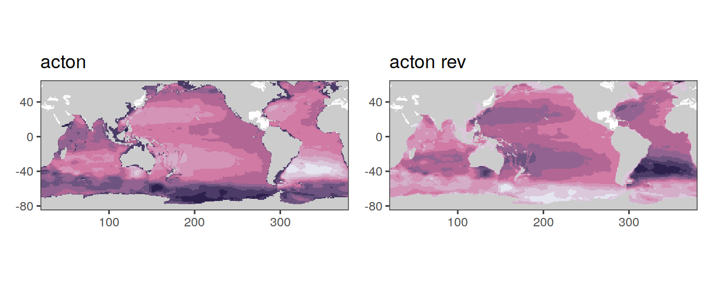
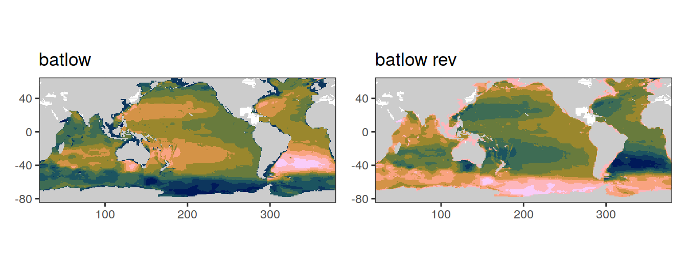
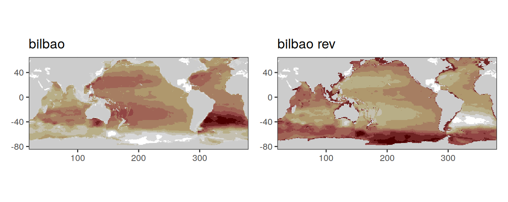
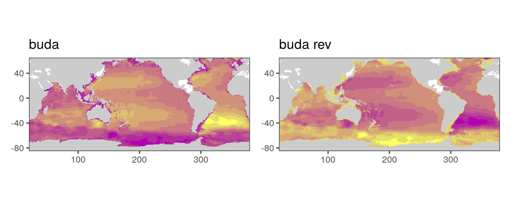
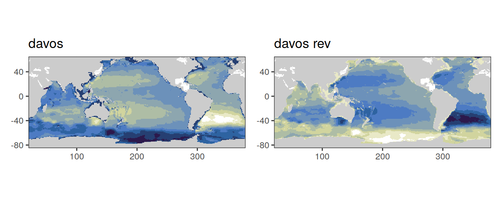
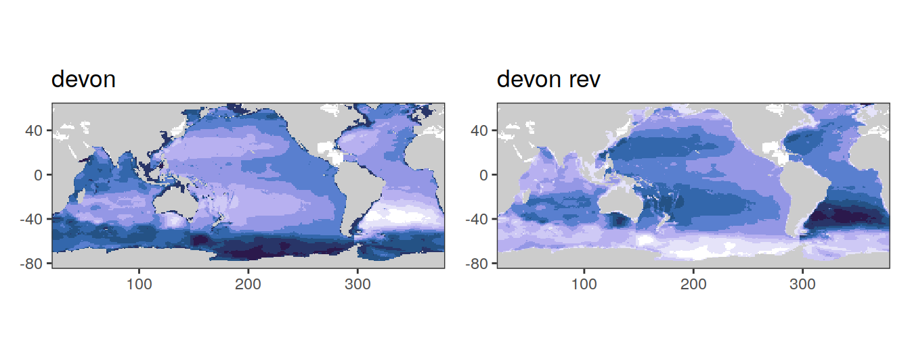
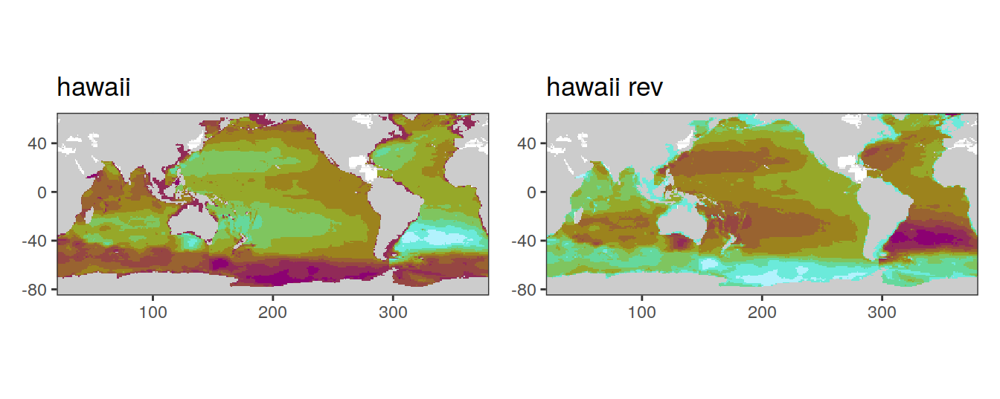

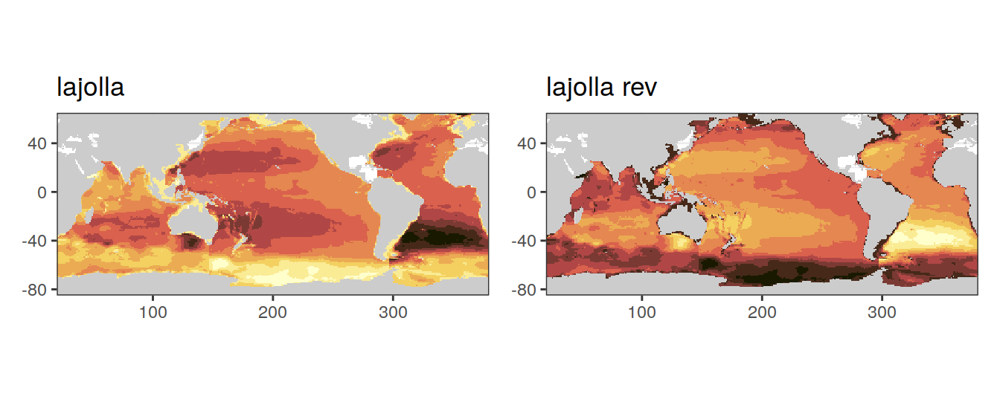
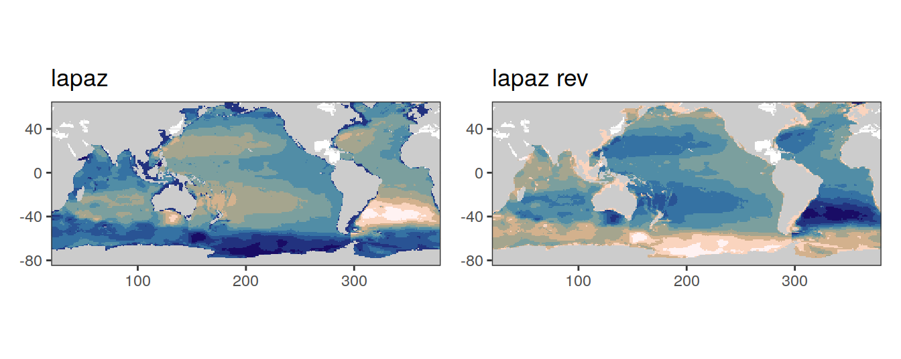
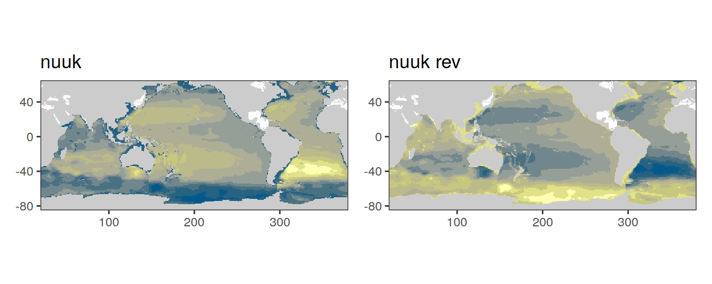
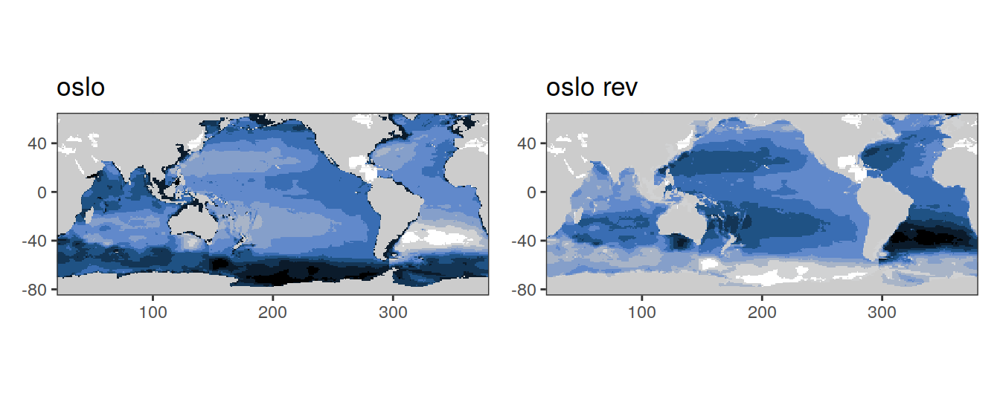
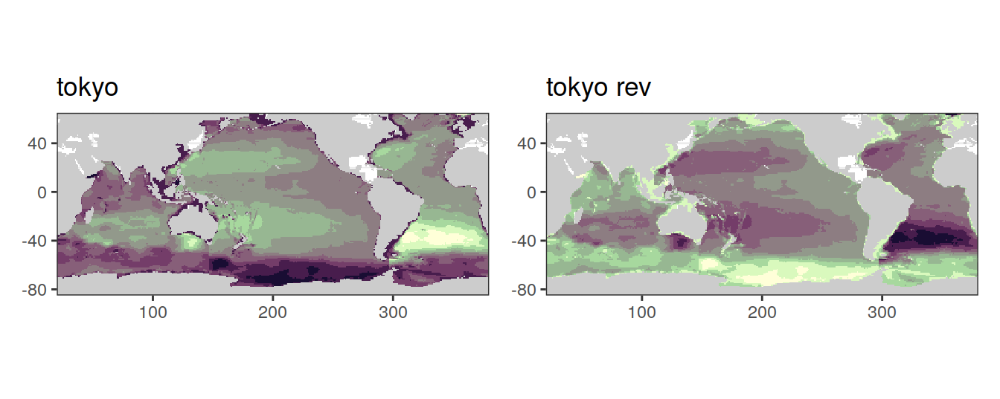
viridis_continous_palettes <- c(
"civides",
"magma",
"inferno",
"plasma"
)
for (i_palette in viridis_continous_palettes) {
p_reg <- map +
geom_tile(data = dcant_inv_all_color_test,
aes(lon, lat, fill = dcant_int)) +
scale_fill_viridis_d(
option = i_palette,
drop = FALSE,
name = legend_title,
guide = "none"
) +
# guides(fill = guide_colorsteps(barheight = unit(3, "cm"))) +
labs(title = i_palette)
p_rev <- map +
geom_tile(data = dcant_inv_all_color_test,
aes(lon, lat, fill = dcant_int)) +
scale_fill_viridis_d(
option = i_palette,
drop = FALSE,
name = legend_title,
direction = -1,
guide = "none"
) +
# guides(fill = guide_colorsteps(barheight = unit(3, "cm"))) +
labs(title = paste(i_palette, "rev"))
print(p_reg | p_rev)
}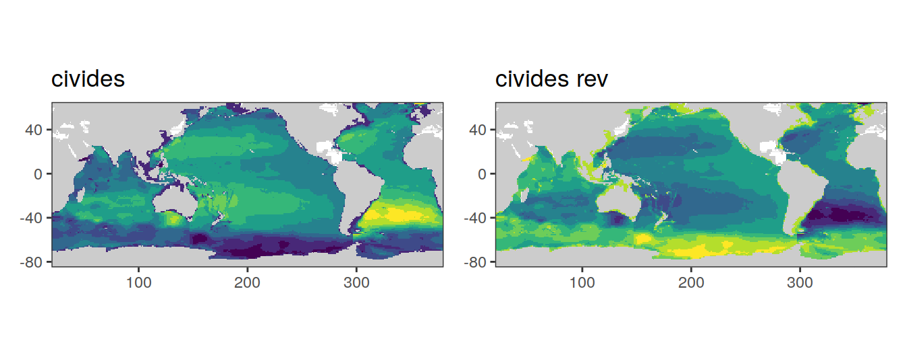
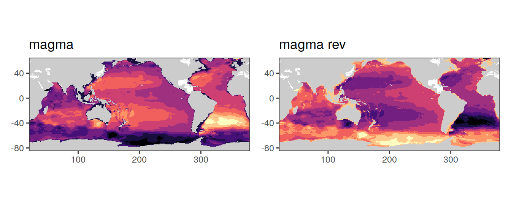
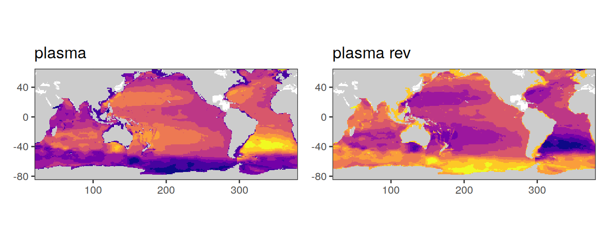
4.1.2 dcant - absolute delta
dcant_inv_all %>%
filter(data_source %in% c("mod", "obs"),
period != "1994 - 2014") %>%
select(data_source, lon, lat, basin_AIP, period, dcant) %>%
pivot_wider(names_from = period,
values_from = dcant) %>%
mutate(delta_dcant = `2004 - 2014` - `1994 - 2004`) %>%
group_by(data_source) %>%
group_split() %>%
# head(1) %>%
map(
~ p_map_cant_inv(df = .x,
var = "delta_dcant",
subtitle_text = paste("data_source:",
unique(.x$data_source)),
col = "divergent") +
# facet_grid(period ~ .) +
theme(axis.text = element_blank(),
axis.ticks = element_blank())
)[[1]]
[[2]]
4.1.3 dcant - absolute delta scaled
dcant_budget_scaling <- dcant_budget_global_all %>%
filter(#data_source %in% c("mod", "obs"),
period != "1994 - 2014") %>%
select(data_source, period, dcant) %>%
pivot_wider(names_from = period,
values_from = dcant) %>%
mutate(dcant_scaling = `2004 - 2014` / `1994 - 2004`) %>%
select(data_source, dcant_scaling)
left_join(dcant_inv_all,
dcant_budget_scaling) %>%
filter(#data_source %in% c("mod", "obs"),
period != "1994 - 2014") %>%
select(data_source, lon, lat, basin_AIP, period, dcant, dcant_scaling) %>%
pivot_wider(names_from = period,
values_from = dcant) %>%
mutate(delta_dcant = `2004 - 2014` - `1994 - 2004`*dcant_scaling) %>%
group_by(data_source) %>%
group_split() %>%
# head(1) %>%
map(
~ p_map_cant_inv(df = .x,
var = "delta_dcant",
subtitle_text = paste("data_source:",
unique(.x$data_source)),
col = "divergent") +
# facet_grid(period ~ .) +
theme(axis.text = element_blank(),
axis.ticks = element_blank())
)[[1]]
[[2]]
| Version | Author | Date |
|---|---|---|
| 4fe7150 | jens-daniel-mueller | 2022-01-21 |
[[3]]
4.1.4 dcant pos - absolute
dcant_inv_all %>%
filter(data_source %in% c("mod", "obs"),
period != "1994 - 2014") %>%
group_by(data_source) %>%
group_split() %>%
# head(1) %>%
map(
~ p_map_cant_inv(df = .x,
var = "dcant_pos",
subtitle_text = paste("data_source:",
unique(.x$data_source))) +
facet_grid(period ~ .) +
theme(axis.text = element_blank(),
axis.ticks = element_blank())
)[[1]]
[[2]]
5 Zonal sections
5.1 dcant - absolut
dcant_zonal_all %>%
filter(data_source == "obs",
period != "1994 - 2014",
depth <= params_global$inventory_depth_standard) %>%
p_section_zonal_continous_depth(var = "dcant",
plot_slabs = "n",
title_text = NULL) +
facet_grid(basin_AIP ~ period)
5.2 dcant - absolute delta
dcant_zonal_all %>%
filter(data_source %in% c("mod", "obs"),
period != "1994 - 2014") %>%
select(data_source, lat, depth, basin_AIP, period, dcant) %>%
pivot_wider(names_from = period,
values_from = dcant) %>%
mutate(delta_dcant = `2004 - 2014` - `1994 - 2004`) %>%
group_by(data_source) %>%
group_split() %>%
# head(1) %>%
map(
~ p_section_zonal_continous_depth(
df = .x,
var = "delta_dcant",
plot_slabs = "n",
title_text = NULL,
col = "bias"
) +
facet_grid(basin_AIP ~ .)
)[[1]]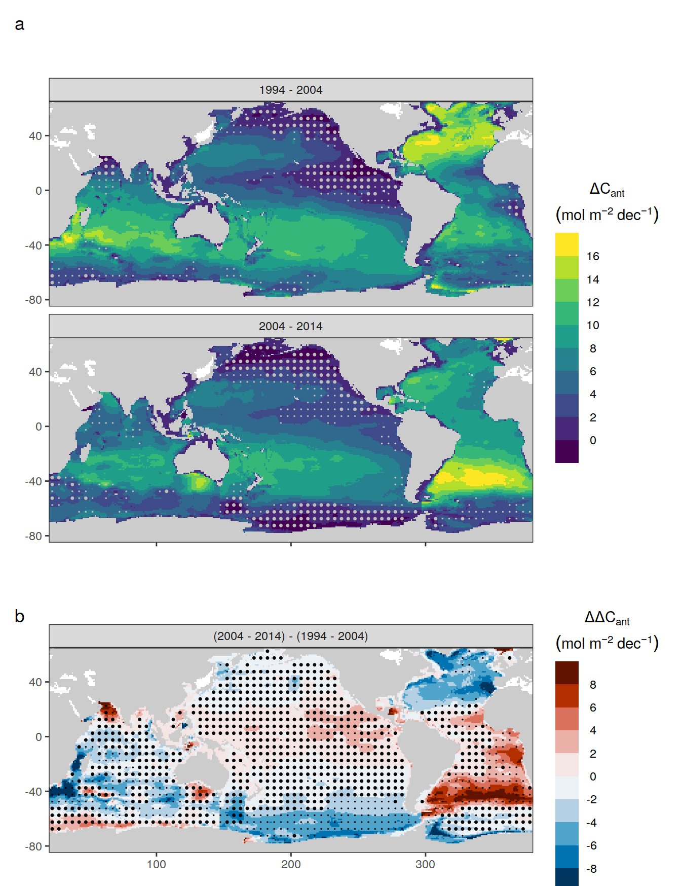
[[2]]
6 Concentration profiles
6.1 dcant - absolute
dcant_profile_all %>%
arrange(depth) %>%
filter(period != "1994 - 2014") %>%
group_split(data_source) %>%
# head(1) %>%
map(
~ ggplot(data = .x,
aes(dcant,
depth)) +
geom_hline(yintercept = params_global$inventory_depth_standard) +
geom_vline(xintercept = 0) +
geom_ribbon(
aes(
xmin = dcant - dcant_sd,
xmax = dcant + dcant_sd,
fill = period
),
alpha = 0.3
) +
geom_path(aes(col = period)) +
scale_y_continuous(trans = trans_reverser("sqrt"),
breaks = c(0, 100, 500, seq(1500, 5000, 1000))) +
coord_cartesian(expand = 0) +
scale_color_brewer(palette = "Set1", name = "mean \u00B1 sd") +
scale_fill_brewer(palette = "Set1", name = "mean \u00B1 sd") +
labs(
title = paste("data_source", unique(.x$data_source)),
y = "Depth (m)",
x = dcant_umol_label
) +
facet_wrap(~ basin_AIP,
ncol = 2)
)[[1]]
[[2]]
[[3]]
dcant_profile_basin_MLR_all %>%
arrange(depth) %>%
filter(period != "1994 - 2014",
MLR_basins == "5") %>%
group_split(data_source) %>%
# head(1) %>%
map(
~ ggplot(data = .x,
aes(dcant,
depth)) +
geom_hline(yintercept = params_global$inventory_depth_standard) +
geom_vline(xintercept = 0) +
geom_ribbon(
aes(
xmin = dcant - dcant_sd,
xmax = dcant + dcant_sd,
fill = period
),
alpha = 0.3
) +
geom_path(aes(col = period)) +
scale_y_continuous(trans = trans_reverser("sqrt"),
breaks = c(0, 100, 500, seq(1500, 5000, 1000))) +
coord_cartesian(expand = 0) +
scale_color_brewer(palette = "Set1", name = "mean \u00B1 sd") +
scale_fill_brewer(palette = "Set1", name = "mean \u00B1 sd") +
labs(
title = paste("data_source", unique(.x$data_source)),
y = "Depth (m)",
x = dcant_umol_label
) +
facet_wrap( ~ basin,
ncol = 2)
)[[1]]
[[2]]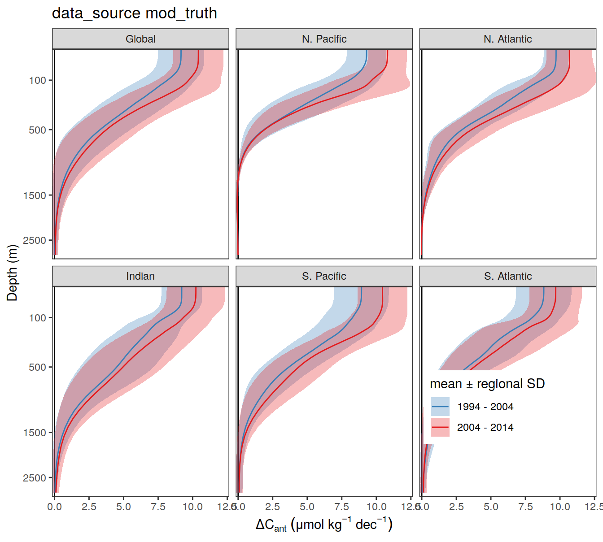
6.2 dcant - absolute delta
delta <- dcant_profile_all %>%
arrange(depth) %>%
filter(period != "1994 - 2014") %>%
select(data_source, depth, basin_AIP, period, dcant) %>%
pivot_wider(names_from = period,
values_from = dcant) %>%
mutate(delta_dcant = `2004 - 2014` - `1994 - 2004`) %>%
select(-c(`2004 - 2014`, `1994 - 2004`))
delta_sd <- dcant_profile_all %>%
arrange(depth) %>%
filter(period != "1994 - 2014") %>%
select(data_source, depth, basin_AIP, period, dcant_sd) %>%
pivot_wider(names_from = period,
values_from = dcant_sd) %>%
mutate(delta_dcant_sd = (`2004 - 2014` + `1994 - 2004`) / 2) %>%
select(-c(`2004 - 2014`, `1994 - 2004`))
dcant_profile_all_delta <- full_join(delta, delta_sd)
rm(delta, delta_sd)
dcant_profile_all_delta %>%
group_split(data_source) %>%
# head(1) %>%
map(
~ ggplot(data = .x,
aes(delta_dcant,
depth)) +
geom_hline(yintercept = params_global$inventory_depth_standard) +
geom_vline(xintercept = 0) +
geom_ribbon(
aes(
xmin = delta_dcant - delta_dcant_sd,
xmax = delta_dcant + delta_dcant_sd
),
alpha = 0.3
) +
geom_path() +
scale_y_continuous(trans = trans_reverser("sqrt"),
breaks = c(0, 100, 500, seq(1500, 5000, 1000))) +
coord_cartesian(expand = 0) +
scale_color_brewer(palette = "Set1", name = "mean \u00B1 sd") +
scale_fill_brewer(palette = "Set1", name = "mean \u00B1 sd") +
labs(title = paste("data_source", unique(.x$data_source)),
y = "Depth (m)",
x = dcant_umol_label) +
facet_wrap( ~ basin_AIP,
ncol = 2))[[1]]
| Version | Author | Date |
|---|---|---|
| c6fe495 | jens-daniel-mueller | 2022-01-26 |
[[2]]
| Version | Author | Date |
|---|---|---|
| c6fe495 | jens-daniel-mueller | 2022-01-26 |
[[3]]
| Version | Author | Date |
|---|---|---|
| c6fe495 | jens-daniel-mueller | 2022-01-26 |
delta <- dcant_profile_basin_MLR_all %>%
arrange(depth) %>%
filter(period != "1994 - 2014",
MLR_basins == "5") %>%
select(data_source, depth, basin, period, dcant) %>%
pivot_wider(names_from = period,
values_from = dcant) %>%
mutate(delta_dcant = `2004 - 2014` - `1994 - 2004`) %>%
select(-c(`2004 - 2014`, `1994 - 2004`))
delta_sd <- dcant_profile_basin_MLR_all %>%
arrange(depth) %>%
filter(period != "1994 - 2014",
MLR_basins == "5") %>%
select(data_source, depth, basin, period, dcant_sd) %>%
pivot_wider(names_from = period,
values_from = dcant_sd) %>%
mutate(delta_dcant_sd = (`2004 - 2014` + `1994 - 2004`) / 2) %>%
select(-c(`2004 - 2014`, `1994 - 2004`))
dcant_profile_basin_MLR_all_delta <- full_join(delta, delta_sd)
rm(delta, delta_sd)
dcant_profile_basin_MLR_all_delta %>%
group_split(data_source) %>%
# head(3) %>%
map(
~ ggplot(data = .x,
aes(delta_dcant,
depth)) +
geom_hline(yintercept = params_global$inventory_depth_standard) +
geom_vline(xintercept = 0) +
geom_ribbon(aes(
xmin = delta_dcant - delta_dcant_sd,
xmax = delta_dcant + delta_dcant_sd
),
alpha = 0.3)+
geom_path() +
scale_y_continuous(trans = trans_reverser("sqrt"),
breaks = c(0, 100, 500, seq(1500, 5000, 1000))) +
coord_cartesian(expand = 0) +
scale_color_brewer(palette = "Set1", name = "mean \u00B1 sd") +
scale_fill_brewer(palette = "Set1", name = "mean \u00B1 sd") +
labs(
title = paste("data_source", unique(.x$data_source)),
y = "Depth (m)",
x = dcant_umol_label
) +
facet_wrap( ~ basin,
ncol = 2)
)[[1]]
| Version | Author | Date |
|---|---|---|
| c6fe495 | jens-daniel-mueller | 2022-01-26 |
[[2]]
| Version | Author | Date |
|---|---|---|
| c6fe495 | jens-daniel-mueller | 2022-01-26 |
7 Budgets
7.1 Basin & hemisphere
dcant_budget_basin_MLR_all_plot <- dcant_budget_basin_MLR_all %>%
filter(period != "1994 - 2014",
data_source == "obs") %>%
mutate(
basin = str_replace(basin, "_", ". "),
basin = fct_relevel(
basin,
"N. Pacific",
"S. Pacific",
"N. Atlantic",
"S. Atlantic",
"Indian"
)
)g1 <- dcant_budget_basin_MLR_all_plot %>%
ggplot(aes(
y = dcant,
x = period,
alluvium = basin,
fill = basin,
stratum = basin
)) +
stat_alluvium(decreasing = FALSE) +
stat_stratum(decreasing = FALSE) +
stat_stratum(geom = "text",
decreasing = FALSE,
aes(label = paste(
round(after_stat(max-min),1)
# 100*round(after_stat(prop), 2), "%"
))) +
ggrepel::geom_label_repel(
data = dcant_budget_basin_MLR_all_plot %>% filter(period == "2004 - 2014"),
stat = "stratum",
size = 4,
nudge_x = .5,
point.padding = 3,
aes(fill = basin, label = basin),
decreasing = FALSE
)+
scale_fill_brewer(palette = "Paired", guide = "none") +
scale_y_continuous(limits = c(0, 32), expand = c(0, 0)) +
labs(y = dcant_pgc_label) +
theme(axis.text.x = element_text(angle = 45, hjust = 1),
axis.title.x = element_blank()) +
theme_classic()
newdat <- tibble(layer_data(g1))
change <-
newdat %>%
select(x, alluvium, count) %>%
pivot_wider(names_from = x,
values_from = count) %>%
mutate(dcant_change = round(100*(`2` - `1`) / `1`)) %>%
select(alluvium, dcant_change)
coord <- newdat %>%
filter(x == 2) %>%
select(x, y, alluvium)
new_layer <- full_join(
change,
coord
)
new_layer <- new_layer %>%
mutate(dcant_change = as.character(dcant_change),
dcant_change = if_else(str_detect(dcant_change, "-"),
dcant_change,
paste0("+", dcant_change)),
dcant_change = paste(dcant_change, "%"))
g1 +
geom_text(data = new_layer,
aes(
x = x - 0.3,
y = y,
label = dcant_change
),
inherit.aes = FALSE)
g2 <- dcant_budget_basin_MLR_all_plot %>%
ggplot(aes(
y = dcant,
x = period,
alluvium = basin,
fill = basin,
stratum = basin,
label = basin
)) +
geom_alluvium() +
geom_stratum() +
stat_stratum(geom = "text",
aes(label = paste(
round(after_stat(count),1)
# 100*round(after_stat(prop), 2), "%"
))) +
ggrepel::geom_label_repel(
data = dcant_budget_basin_MLR_all_plot %>% filter(period == "2004 - 2014"),
stat = "stratum",
size = 4,
nudge_x = .5,
point.padding = 3,
aes(fill = basin)
)+
scale_fill_brewer(palette = "Paired", guide = "none") +
scale_color_brewer(palette = "Paired", guide = "none") +
scale_y_continuous(limits = c(0, 32.5), expand = c(0, 0)) +
guides(y = "none") +
labs(title = dcant_pgc_label) +
theme_classic() +
theme(axis.text.x = element_text(angle = 45, hjust = 1),
axis.title.x = element_blank(),
axis.title.y = element_blank(),
plot.title = element_text(hjust = 0.5))
newdat <- tibble(layer_data(g2))
change_basin <-
newdat %>%
select(x, alluvium, count) %>%
pivot_wider(names_from = x,
values_from = count) %>%
mutate(dcant_change = round(100*(`2` - `1`) / `1`)) %>%
select(alluvium, dcant_change)
coord_basin <- newdat %>%
filter(x == 2) %>%
select(x, y, alluvium)
new_layer_basin <- full_join(
change_basin,
coord_basin
)
new_layer_basin <- new_layer_basin %>%
mutate(dcant_change = as.character(dcant_change),
dcant_change = if_else(str_detect(dcant_change, "-"),
dcant_change,
paste0("+", dcant_change)),
dcant_change = paste(dcant_change, "%"))
new_layer_total <-
newdat %>%
select(x, alluvium, count) %>%
group_by(x) %>%
summarise(dcant_change = sum(count)) %>%
ungroup()
new_layer_total <- new_layer_total %>%
mutate(y = dcant_change,
dcant_change = as.character(round(dcant_change,1)),
dcant_change = paste("global:",dcant_change))
g2 +
geom_text(data = new_layer_basin,
aes(
x = x - 0.3,
y = y,
label = dcant_change
),
inherit.aes = FALSE) +
geom_label(data = new_layer_total,
aes(
x = x,
y = y + 1,
label = dcant_change
),
inherit.aes = FALSE)
sessionInfo()R version 4.1.2 (2021-11-01)
Platform: x86_64-pc-linux-gnu (64-bit)
Running under: openSUSE Leap 15.3
Matrix products: default
BLAS: /usr/local/R-4.1.2/lib64/R/lib/libRblas.so
LAPACK: /usr/local/R-4.1.2/lib64/R/lib/libRlapack.so
locale:
[1] LC_CTYPE=en_US.UTF-8 LC_NUMERIC=C
[3] LC_TIME=en_US.UTF-8 LC_COLLATE=en_US.UTF-8
[5] LC_MONETARY=en_US.UTF-8 LC_MESSAGES=en_US.UTF-8
[7] LC_PAPER=en_US.UTF-8 LC_NAME=C
[9] LC_ADDRESS=C LC_TELEPHONE=C
[11] LC_MEASUREMENT=en_US.UTF-8 LC_IDENTIFICATION=C
attached base packages:
[1] stats graphics grDevices utils datasets methods base
other attached packages:
[1] ggalluvial_0.12.3 ggforce_0.3.3 metR_0.11.0 scico_1.3.0
[5] patchwork_1.1.1 collapse_1.7.0 forcats_0.5.1 stringr_1.4.0
[9] dplyr_1.0.7 purrr_0.3.4 readr_2.1.1 tidyr_1.1.4
[13] tibble_3.1.6 ggplot2_3.3.5 tidyverse_1.3.1 workflowr_1.7.0
loaded via a namespace (and not attached):
[1] fs_1.5.2 lubridate_1.8.0 bit64_4.0.5 RColorBrewer_1.1-2
[5] httr_1.4.2 rprojroot_2.0.2 tools_4.1.2 backports_1.4.1
[9] bslib_0.3.1 utf8_1.2.2 R6_2.5.1 DBI_1.1.2
[13] colorspace_2.0-2 withr_2.4.3 tidyselect_1.1.1 processx_3.5.2
[17] bit_4.0.4 compiler_4.1.2 git2r_0.29.0 cli_3.1.1
[21] rvest_1.0.2 xml2_1.3.3 isoband_0.2.5 labeling_0.4.2
[25] sass_0.4.0 scales_1.1.1 checkmate_2.0.0 callr_3.7.0
[29] digest_0.6.29 rmarkdown_2.11 pkgconfig_2.0.3 htmltools_0.5.2
[33] highr_0.9 dbplyr_2.1.1 fastmap_1.1.0 rlang_0.4.12
[37] readxl_1.3.1 rstudioapi_0.13 jquerylib_0.1.4 generics_0.1.1
[41] farver_2.1.0 jsonlite_1.7.3 vroom_1.5.7 magrittr_2.0.1
[45] Rcpp_1.0.8 munsell_0.5.0 fansi_1.0.2 lifecycle_1.0.1
[49] stringi_1.7.6 whisker_0.4 yaml_2.2.1 MASS_7.3-55
[53] grid_4.1.2 ggrepel_0.9.1 parallel_4.1.2 promises_1.2.0.1
[57] crayon_1.4.2 haven_2.4.3 hms_1.1.1 knitr_1.37
[61] ps_1.6.0 pillar_1.6.4 reprex_2.0.1 glue_1.6.0
[65] evaluate_0.14 getPass_0.2-2 data.table_1.14.2 modelr_0.1.8
[69] vctrs_0.3.8 tzdb_0.2.0 tweenr_1.0.2 httpuv_1.6.5
[73] cellranger_1.1.0 gtable_0.3.0 polyclip_1.10-0 assertthat_0.2.1
[77] xfun_0.29 broom_0.7.11 later_1.3.0 viridisLite_0.4.0
[81] ellipsis_0.3.2